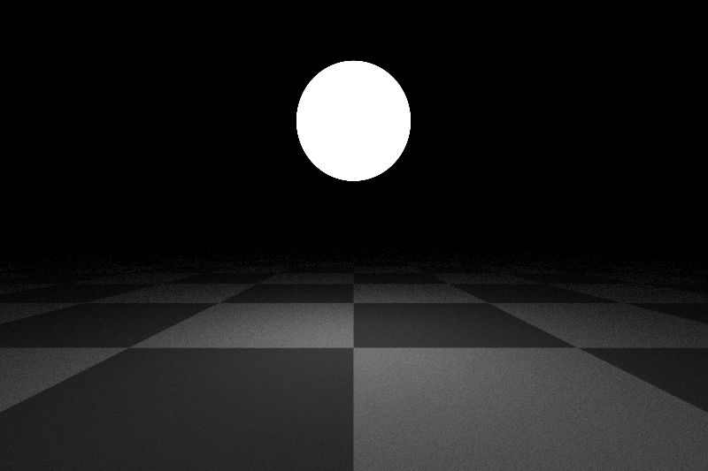
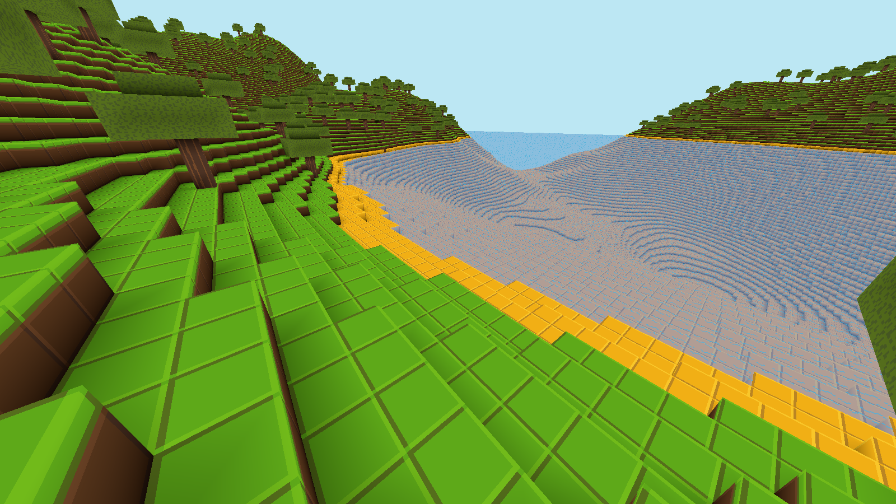
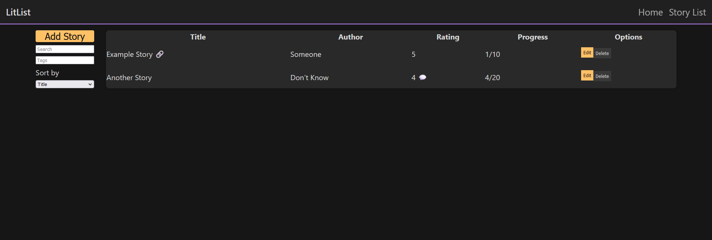
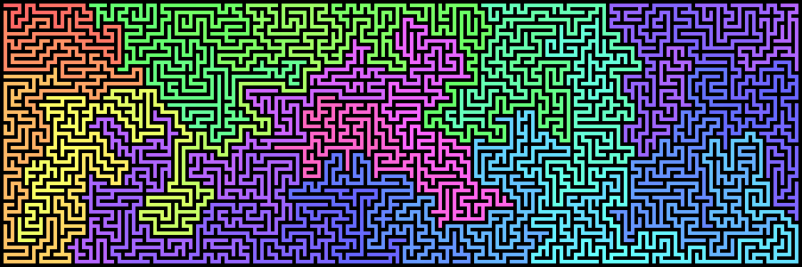

hgschultz
About
Projects
Various projects that I have made

Ray Tracer
Graphics
Rust
A software ray-tracer written in rust. Largely based on
Ray Tracing in One Weekend by Peter Shirley
, with some additional features.

Voxel Toy
Graphics
Rust
wgpu
A minecraft style voxel toy written in rust using wgpu.

LitList
Webdev
Rust
Rocket
A web app built to track read literature. Builtin rust using rocket.

Maze Generator
Visualization
Javascript
A simple maze generator written in javascript. Creates rather satisfying animations.